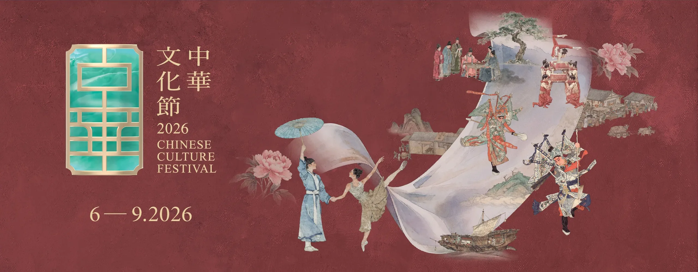
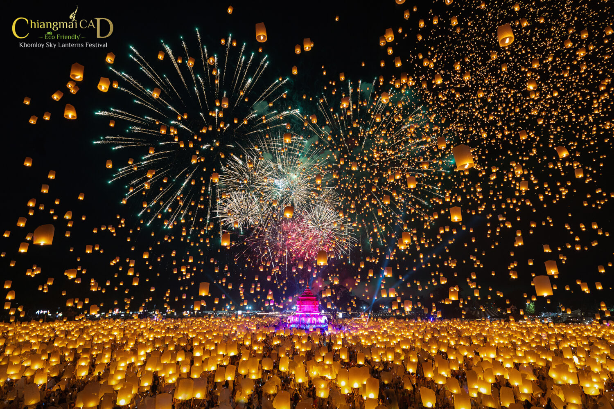

Experience the Magic of World Festivals
Embark on a journey through culinary excellence, vibrant traditions, and breathtaking lantern-lit skies. Discover our handpicked cultural celebrations.
Culinary
Ballymaloe Festival of Food
Celebrate organic foods, artisan markets, talks, live cooking demonstrations, and exquisite culinary creations from local and international chefs.
Explore Festival
TraditionChinese Culture Festival
Immerse yourself in spectacular cultural arts, dynamic acrobatics, traditional Cantonese opera, folk music, and local heritage exhibitions.
Explore Festival
LightYi Peng Lantern Festival
Witness the breathtaking spectacle of thousands of glowing paper lanterns floating into the night sky, releasing positive wishes and dreams.
Explore Festival